Exercice de la semaine 8 - Cours théorique
Vous devez faire les exercices à partir de votre portable.
Téléchargez le fichier 1r1_ex_s8-e082789e46712a739713edf17d038e06.zip.
Il faut extraire tout son contenu dans le dossier c:\1r1\.
Il faut que le lecteur Z: ne soit pas utilisé sur votre ordinateur.
Si vous n'avez pas Windows sur votre portable, utilisez l'ordinateur du laboratoire.
1. Création des fichiers de travail
Vous devez exécuter le script Depart.bat (pas en administrateur) pour préparer l'exercice.
Il se retrouve dans le dossier c:\1r1\cours8\ si vous avez extrait correctement le fichier ZIP.

La fenêtre ci-dessous s'affichera.

Appuyez sur la touche ENTER pour fermer la fenêtre.
Le script a créé le dossier C:\execmd\ avec des fichiers et il a simulé un lecteur Z: temporairement. Le lecteur Z: s'effacera lors du prochain redémarrage de l'ordinateur.
Il est possible que Windows bloque le fichier bat, car il provient de l'internet.
Pour le débloquer, vous ouvrir les propriétés du fichier Depart.bat.

Ensuite, il faut appuyer sur le bouton Débloquer et ensuite le bouton OK.

Première série
Numéro 1
Changez le dossier de travail pour c:\execmd\cours\.
Utilisez la notation absolue.
Réponse
La commande est : cd c:\execmd\cours
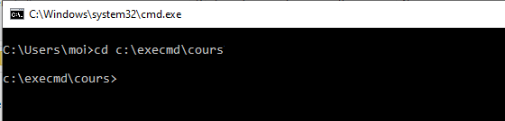Numéro 2
Affichez le contenu du dossier.
Réponse
La commande est : dir
L'élément data est un dossier.
L'élément info.txt est un fichier.
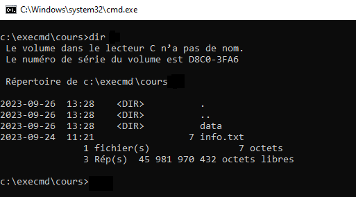Numéro 3
Le dossier c:\execmd\cours\ affiche un dossier et un fichier.
Changez le dossier de travail pour vous déplacer dans le sous-dossier. Il ne faut pas tenir compte des dossiers . et .. (dossier de références).
Utilisez la notation relative.
Réponse
La commande est : cd data
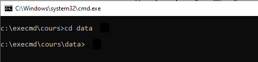Numéro 4
Les numéros de la partie 4 se font en analysant le contenu du dossier c:\execmd\cours\data\.
Numéro 4.1
Affichez le contenu du dossier.
Réponse
La commande est : dir
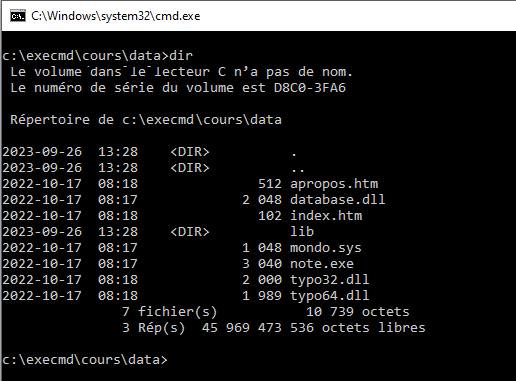Numéro 4.2
Déterminez le nombre de dossiers. Il ne faut pas tenir compte des dossiers . et .. (dossier de références).
Réponse
Il y a 1 dossier.
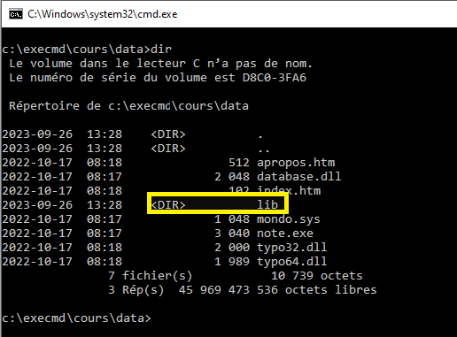Numéro 4.3
Déterminez le nombre de fichiers.
Réponse
Il y a 7 fichiers.
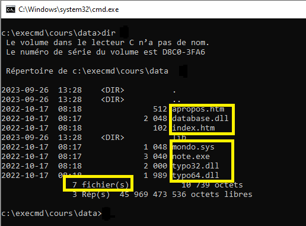Numéro 4.4
Déterminez la taille totale des fichiers en octets.
Réponse
La taille est de 10 739 octets.
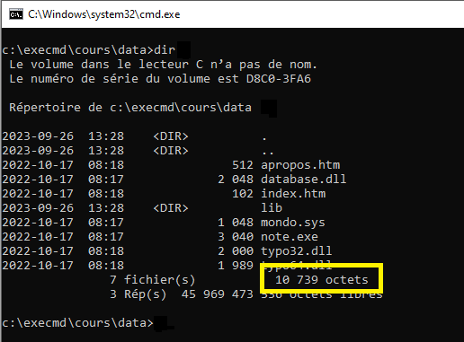Numéro 4.5
Déterminez le fichier qui est le plus gros.
Réponse
Le fichier le plus gros est note.exe.
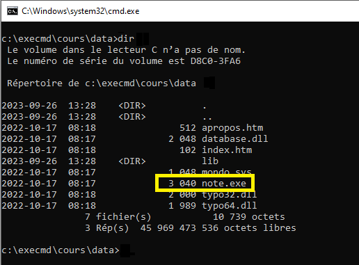Numéro 5
Changez le dossier de travail pour c:\execmd\cours\.
Utilisez la notation relative.
Réponse
La commande est : cd ..
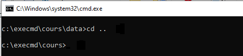Numéro 6
Créez le dossier c:\execmd\copie\.
Utilisez la notation relative.
Réponse
La commande est : md ..\copie
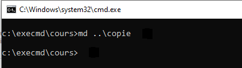Numéro 7
Changez le dossier de travail pour le lecteur z.
Réponse
La commande est : z:
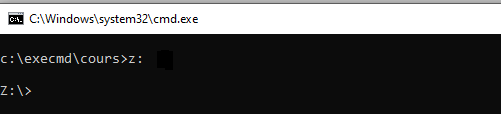Numéro 8
Copiez tous les fichiers du dossier z:\ dans le dossier c:\execmd\copie\.
Utilisez la notation relative pour la source et la notation absolue pour la destination.
Réponse
La commande est : copy *.* c:\execmd\copie
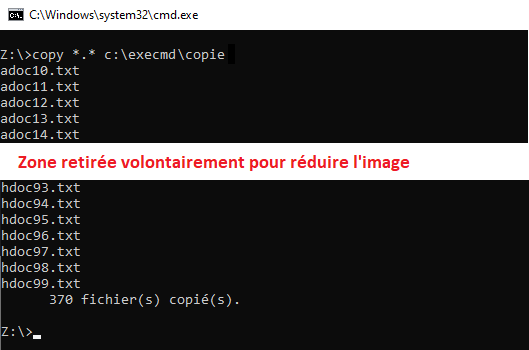Numéro 9
Changez le dossier de travail pour c:\execmd\copie\.
Utilisez la notation absolue.
Utilisez 2 commandes
Réponse
La commande #1 est : c:
La commande #2 est : cd c:\execmd\copie
Il est possible de le faire en une seule commande : cd /d c:\execmd\copie
Numéro 10
Changez le dossier de travail pour c:\execmd\cours\data\.
Utilisez la notation relative.
Réponse
La commande est : cd ..\cours\data
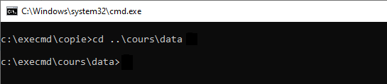Numéro 11
Affichez tous les fichiers qui ont l'extension dll.
Réponse
La commande est : dir *.dll
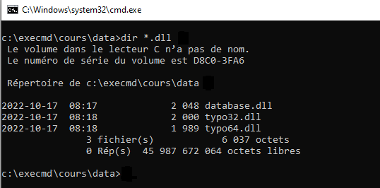Numéro 12
Déplacez tous les fichiers qui ont l'extension htm du dossier c:\execmd\cours\data\. vers le dossier c:\execmd\cours\data\html\.
Vous devez utiliser 2 commandes.
La commande #1 est pour créer le dossier. Utilisez la notation relative.
La 2e est pour le déplacement. Utilisez la notation relative pour la source et la notation absolue la destination.
Réponse
La commande #1 est : md html
La commande #2 est : move *.htm c:\execmd\cours\data\html
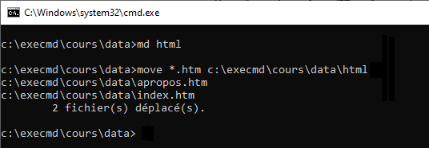Numéro 13
Ce numéro vous permet de visualiser le avant et le après de la commande pour renommer plusieurs fichiers en même temps.
Numéro 13.1
Affichez le contenu du dossier c:\execmd\cours\data\html\ sans vous déplacer dans ce dossier pour voir le contenu initial.
Utilisez la notation relative.
Réponse
La commande est : dir c:\execmd\cours\data\html
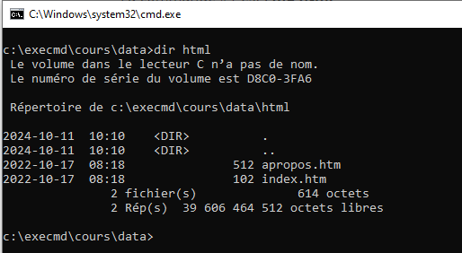Notez que les fichiers ont l'extension ".htm".
Numéro 13.2
Renommez tous les fichiers du dossier qui ont l'extension htm pour html du dossier c:\execmd\cours\data\html\.
Utilisez la notation absolue.
Réponse
La commande est : ren c:\execmd\cours\data\html\*.htm *.html
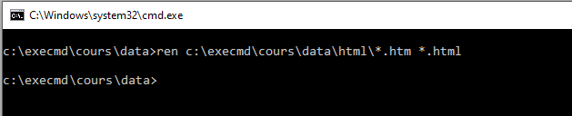Numéro 13.3
Affichez le contenu du dossier c:\execmd\cours\data\html\ sans vous déplacer dans ce dossier pour voir le changement.
Utilisez la notation absolue.
Réponse
La commande est : dir c:\execmd\cours\data\html
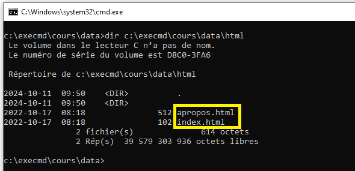Notez que les fichiers ont maintenant l'extension ".html".
Numéro 14
Renommez le dossier c:\execmd\cours\data\lib\ pour librairie.
Utilisez la notation relative.
Réponse
La commande est : ren lib librairie
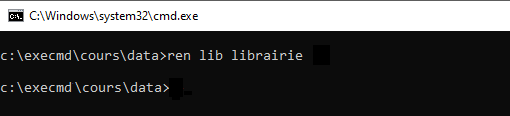Numéro 15
Changez le dossier de travail pour c:\execmd\cours\data\librairie\.
Utilisez la notation relative.
Réponse
La commande est : cd librairie
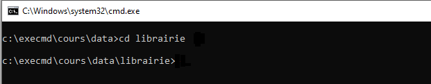Numéro 16
Ce numéro vous permet de visualiser l’avant et l'après de la commande pour copier et renommer plusieurs fichiers en même temps dans un même dossier.
Numéro 16.1
Affichez le contenu du dossier c:\execmd\data\librairie\.
Réponse
La commande est : dir
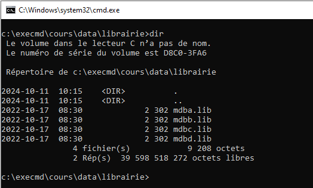Numéro 16.2
Créez une copie de tous les fichiers .lib pour avoir .lib.old comme extension.
Utilisez la notation relative pour la source et la destination.
Réponse
La commande est : copy *.lib *.lib.old
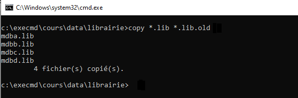Numéro 16.3
Affichez le contenu du dossier c:\execmd\data\librairie\.
Réponse
La commande est : dir
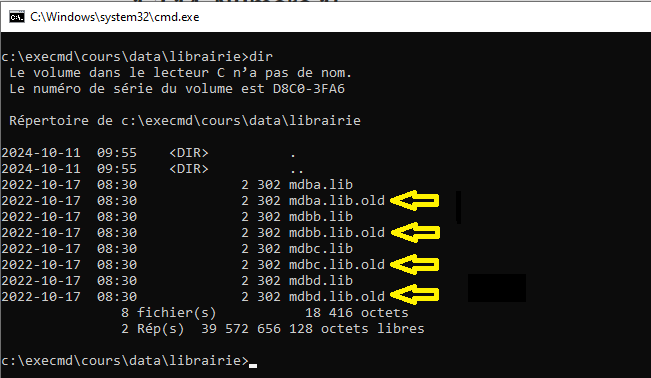Vous voyez maintenant les duplicatas avec l'extension ".old".
Numéro 17
Changez le dossier de travail pour c:\execmd\cours\data\.
Utilisez la notation relative.
Réponse
La commande est : cd ..
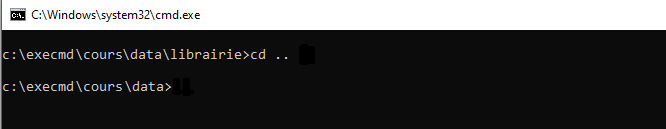Numéro 18
Ce numéro vous permet de visualiser l'avant et l'après de la commande pour copier et renommer plusieurs fichiers en même temps dans un nouveau dossier.
Numéro 18.1
Affichez le contenu du dossier c:\execmd\cours\data\.
Réponse
La commande est : dir
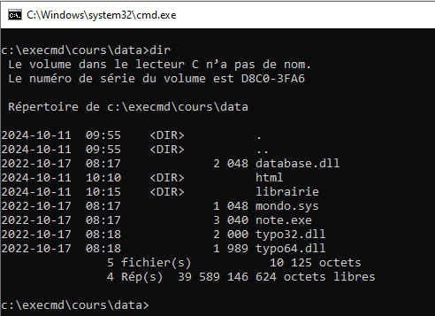Numéro 18.2
Créez le dossier c:\execmd\cours\backup\ en utilisant la notation absolue.
Réponse
La commande est : md c:\execmd\cours\backup
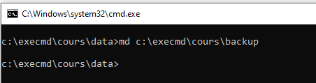Numéro 18.3
Créez une copie de tous les fichiers pour ajouter à leur extension .copy du dossier c:\execmd\cours\data\ dans le dossier c:\execmd\cours\backup\.
Exemple, le fichier database.dll doit avoir une copie database.dll.copy.
Utilisez la notation relative pour la source et la notation absolue pour la destination.
Réponse
La commande est : copy *.* c:\execmd\cours\backup\*.dll.copy
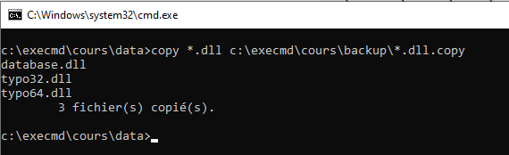Numéro 18.4
Affichez le contenu du dossier c:\execmd\cours\backup\ sans vous déplacer dans ce dossier pour voir le changement.
Utilisez la notation absolue.
Réponse
La commande est : dir c:\execmd\cours\backup
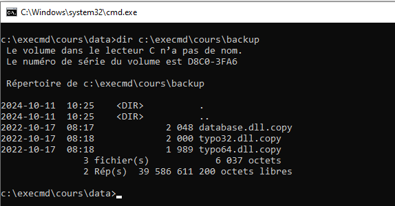Numéro 19
Supprimez le dossier c:\execmd\cours\data\librairie\.
Utilisez la notation relative.
Le dossier contient des fichiers. Il faut utiliser un paramètre additionnel pour permettre la suppression.
Réponse
La commande est : rd librairie /s
Le paramètre /s permet de supprimer le contenu du dossier également.
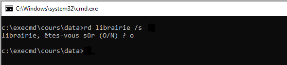Numéro 20
Numéro 20.1
Supprimez tous les fichiers du dossier c:\execmd\cours\data\html\. Le dossier ne doit pas être supprimé.
Utilisez la notation absolue.
Réponse
La commande est : del c:\execmd\cours\data\html\*.*
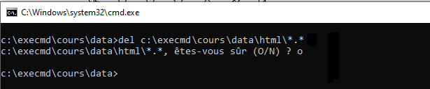Numéro 20.2
Affichez le contenu du dossier c:\execmd\cours\data\html\ sans vous déplacer dans ce dossier pour voir le changement.
Utilisez la notation absolue.
Réponse
La commande est : dir c:\execmd\cours\data\html
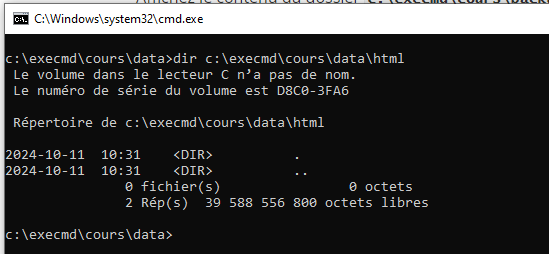Numéro 21
Créez l'arborescence ci-dessous.
c:\execmd
├───d1
│ └───d12
│ ├───d131
│ └───d132
└───docs
├───txt
└───word
Utilisez le moins de commandes. Il est possible de le faire en 4 commandes.
Utilisez la notation absolue.
Réponse
La commande #1 est : md c:\execmd\d1\d12\d131
La commande #2 est : md c:\execmd\d1\d12\d132
La commande #3 est : md c:\execmd\docs\txt
La commande #3 est : md c:\execmd\docs\word
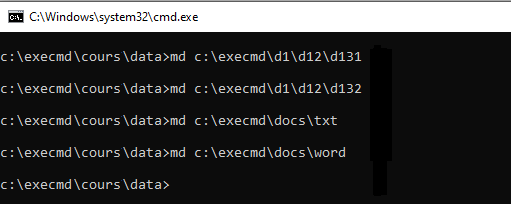3. Métacaractère
Voici des exercices additionnels pour les métacaractères.
Changez le dossier de travail pour le lecteur z:.
![]()
Numéro 1
Affichez tous les fichiers qui ont l'extension .txt. Il doit avoir 280 fichiers.
Réponse
La commande est : dir *.txt
Numéro 2
Affichez tous les fichiers que leur nom débute par doc. Il doit avoir 180 fichiers.
Réponse
La commande est : dir doc*.*
Le .* est important, car il permet de faire la recherche uniquement pour la partie nom.
Numéro 3
Affichez tous les 10 fichiers de hdoc20.txt à hdoc29.txt.
Les fichiers hdoc200.txt à hdoc209.txt ne doivent pas s'afficher.
Réponse
La commande est : dir hdoc2?.txt
Le ? permet d'indiquer que le nom du fichier doit avoir 6 caractères et le dernier peut être n'importe quoi.
Numéro 4
Affichez tous les fichiers qui débutent par adoc et hdoc dans le dossier. Il doit avoir 190 fichiers.
Les fichiers qui débutent par doc ne doivent pas être affichés.
Réponse
La commande est : dir ?doc*.*
Si un fichier s'appellerait zdoc12.txt, il serait tout de même affiché, car le ? represente tous les caractères.
Numéro 5
Affichez tous les fichiers qui contiennent le chiffre 3 dans leur nom. Il doit avoir 73 fichiers.
Réponse
La commande est : dir *3*.*
Numéro 6
Affichez tous les fichiers que leur nom se termine par le chiffre 8 et sans tenir compte de leur extension. Il doit avoir 37 fichiers.
Réponse
La commande est : dir *8.*
Numéro 6
Affichez tous les fichiers que leur nom ont une longueur de 6 caractères et qui se termine par 2. Il doit avoir 18 fichiers.
Réponse
La commande est : dir ?????2.*
4. Redirection
Vous devez rester dans le dossier de travail z:\.
Numéro 1
Affichez tous les fichiers .dll du dossier c:\windows\system32.
La commande pour cet affichage est dir c:\windows\system32\*.dll.
Redirigez le résultat dans le fichier c:\execmd\num41.txt.
Si le fichier existe, il doit être écrasé.
Réponse
La commande est : dir c:\Windows\System32\*.dll > c:\execmd\num41.txt
Tapez la commande notepad c:\execmd\num41.txt pour voir le contenu du fichier dans bloc-note.
Numéro 2
Affichez l’arborescence du dossier c:\execmd\cours sans les fichiers.
La commande est tree c:\execmd\cours.
Affichez l’arborescence du dossier c:\execmd\cours avec les fichiers.
La commande est tree /F c:\execmd\cours.
Redirigez les résultats des 2 commandes dans le fichier c:\execmd\num42.txt.
Il faut que le résultat des 2 commandes soit dans le même fichier.
Réponse
La commande #1 est : tree c:\execmd\cours >> c:\execmd\num42.txt
La commande #2 est : tree /F c:\execmd\cours >> c:\execmd\num42.txt
Tapez la commande type c:\execmd\num42.txt pour voir le contenu du fichier dans l'invite de commande.

Numéro 3
Vous devez écraser le fichier c:\execmd\num42.txt pour y inscrire le fichier ci-dessous.
Je maitrise bien les redirections.
Le cours 1R1 est palpitant !
Il faut faire 2 commandes echo.
Réponse
La commande #1 est : echo Je maitrise bien les redirections. > c:\execmd\num42.txt
La commande #2 est : echo Le cours 1R1 est palpitant ! >> c:\execmd\num42.txt
Il est important d'utiliser un seul > pour la première commande, pour effacer le contenu du fichier. La deuxième commande doit avoir 2 >> pour conserver le contenu de la première commande.
Tapez la commande type c:\execmd\num42.txt pour voir le contenu du fichier dans l'invite de commande.
![]()
5. Nettoyage
N'oubliez pas de supprimer le dossier c:\execmd\.
Redémarrez votre ordinateur pour que le lecteur Z: soit supprimé.